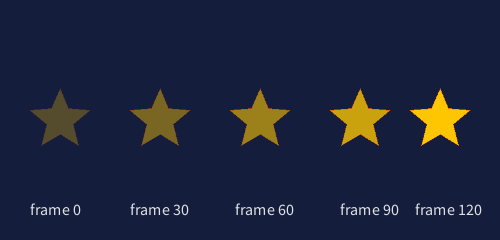
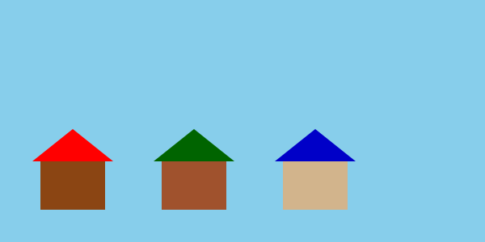

武蔵野大学データサイエンス学部
武蔵野大学国際データサイエンス学部（通信教育部）
中村 亮太
データをまとめて扱い、コードを整理する力を身につける
ノート: Notionに記録する項目（提出前に確認）
以下の項目を1つのNotionページに記録し、PDF化して提出します。各項目は資料内の該当箇所にテンプレートがあります。
| セクション | 記録する内容 | リンク | |
|---|---|---|---|
| ノート 復習問題（〇の三角形） | 自分の解答コード＋実行結果（テキスト）＋一言メモ | 移動 | |
| ノート データ構造の基礎 | リスト・辞書・関数の穴埋め問題 | 移動 | |
| ノート リスト操作 練習問題 1〜7 | 自分の答え／合否／間違えた問題の「なぜ」「どこが分からなかったか」 | 移動 | |
| ノート リスト口頭試問 | 3問の作問＋全員分の出題・回答・正誤の記録 | 移動 | |
| 標準課題 std4-1 | リスト操作6問のコードと実行結果 | 移動 | |
| 標準課題 std4-2 | コード全文＋実行結果（2色以上のスクリーンショット）＋辞書の色一覧 | 移動 | |
| 標準課題 std4-3 | コード全文＋実行結果（スクリーンショット）＋「なぜ関数に分けたか」の説明（2〜3文） | 移動 | |
| 発展課題 adv4-1 | コード全文＋実行結果＋使用技術の一覧（リスト/辞書/関数/for/ifがどこに使われているか）＋音声説明（1〜2分・別途Google Classroom） | 移動 |
下のコードブロックを丸ごとコピーしてNotionに貼り、各項目を埋めていきましょう。＿＿＿ の部分が記入欄です。
Notion テンプレート（全体）
# 第4回 課題提出 ── ＿＿＿（学籍番号・名前）
提出日: ＿＿＿ / グループ: ＿＿＿ / 欠席の有無: ＿＿＿
────────────────────────────────────────
## 0. 復習問題（〇の三角形）
────────────────────────────────────────
【自分の解答コード】
```python
＿＿＿
```
【実行結果】
```
＿＿＿
```
【一言メモ】（解答を見る前 / 後で気づいたこと）
＿＿＿
────────────────────────────────────────
## 1. データ構造の基礎（穴埋め5問）
────────────────────────────────────────
1. リストは ＿＿＿ のあるデータの集合である
2. 辞書は ＿＿＿ と ＿＿＿ のペアでデータを管理する
3. 関数の3つの要素は ＿＿＿（入力）、＿＿＿（処理）、＿＿＿（出力）
4. 関数に分割する利点を2つ挙げよ: ＿＿＿、＿＿＿
5. 次回（第5回）で扱うCSVデータは ＿＿＿ というデータ構造で表現できる
────────────────────────────────────────
## 2. リスト操作 練習問題 1〜7
────────────────────────────────────────
| 問 | 自分の答え | 合否 | なぜ間違えたか | どこが分からなかったか |
|----|-----------|------|---------------|----------------------|
| 1 | ＿＿＿ | ＿ | ＿＿＿ | ＿＿＿ |
| 2 | ＿＿＿ | ＿ | ＿＿＿ | ＿＿＿ |
| 3 | ＿＿＿ | ＿ | ＿＿＿ | ＿＿＿ |
| 4 | ＿＿＿ | ＿ | ＿＿＿ | ＿＿＿ |
| 5 | ＿＿＿ | ＿ | ＿＿＿ | ＿＿＿ |
| 6 | ＿＿＿ | ＿ | ＿＿＿ | ＿＿＿ |
| 7 | ＿＿＿ | ＿ | ＿＿＿ | ＿＿＿ |
────────────────────────────────────────
## 3. リスト口頭試問（グループワーク）
────────────────────────────────────────
【自分が作った3問】
問1: ＿＿＿
答え: ＿＿＿
問2: ＿＿＿
答え: ＿＿＿
問3: ＿＿＿
答え: ＿＿＿
【全員分の出題・回答・正誤】
- ＿＿＿さん 出題: ＿＿＿ 自分の回答: ＿＿＿ 正誤: ＿
- ＿＿＿さん 出題: ＿＿＿ 自分の回答: ＿＿＿ 正誤: ＿
- （以下メンバー全員分）
────────────────────────────────────────
## 4. std4-1: リスト操作（6項目）
────────────────────────────────────────
`scores = [85, 72, 90, 68, 95, 78, 88]` に対して:
1. len の結果: ＿＿＿
2. scores[2]: ＿＿＿
3. append(82) 後: ＿＿＿
4. scores[:3]: ＿＿＿
5. for で合計／平均: 合計=＿＿＿ 平均=＿＿＿
6. 80点以上の要素: ＿＿＿
【コード】
```python
＿＿＿
```
────────────────────────────────────────
## 5. std4-2: 辞書を使ったデータ管理
────────────────────────────────────────
【コード全文】
```python
＿＿＿
```
【実行結果スクリーンショット】（2色以上の状態）
＿＿＿（画像貼付）
【辞書に登録した色の一覧】
- ＿: (R, G, B)
- ＿: (R, G, B)
- ＿: (R, G, B)
- ＿: (R, G, B)
【辞書にないキーを押したときの動作】
＿＿＿
────────────────────────────────────────
## 6. std4-3: 関数設計
────────────────────────────────────────
【コード全文】
```python
＿＿＿
```
【実行結果スクリーンショット】
＿＿＿（画像貼付）
【なぜ関数に分けたか（2〜3文）】
＿＿＿
────────────────────────────────────────
## 7. adv4-1: 総合制作
────────────────────────────────────────
【作品タイトル】
＿＿＿
【コード全文】
```python
＿＿＿
```
【実行結果スクリーンショット】
＿＿＿（画像貼付）
【使用した技術の一覧】
- リスト: ＿＿＿（どこで何のために使ったか）
- 辞書: ＿＿＿
- 自作関数: ＿＿＿
- for文: ＿＿＿
- if文: ＿＿＿
【画像を使ったか / アニメーションを入れたか（推奨）】
- 画像: ＿＿＿
- アニメーション: ＿＿＿
【工夫した点・苦労した点】
＿＿＿
【音声説明】
- 録音ファイル名: ＿＿＿
- Google Classroom に別途提出（リンク or 提出済みチェック）: ＿
────────────────────────────────────────
## 全体ふりかえり（任意）
────────────────────────────────────────
【今日いちばん理解できたこと】
＿＿＿
【まだモヤモヤしていること・質問したいこと】
＿＿＿
使い方: このテンプレートをそのままNotionに貼り、上から順に ＿＿＿ を埋めていく。最後にNotionの「・・・」メニュー → Export → PDF でPDF化してGoogle Classroomに提出。音声ファイル（adv4-1）はPDFとは別にClassroomへ。
第3回までで、変数・条件分岐・繰り返し・アニメーションを学びました。今回は「データの整理」と「コードの整理」を学びます。これが次回（第5回）のCSVデータ処理の土台になります。
復習問題 ── 第3回までの内容（変数・for文・print）が身についているか確認
print() と for 文を使って、下のような3行の三角形を出力するコードを書きなさい。1行目に〇を3個、2行目に2個、3行目に1個。
〇〇〇 〇〇 〇
↑ ターミナルにこう表示されればOK
ターミナルで python または python3 と打つと、>>> のプロンプトが出ます（これがインタラクティブモード＝対話モード）。1行ずつ打って Enter で即実行できます。
抜けるときは exit() または Ctrl+D。
▲ ターミナルで実際にこの順に打つだけ ── 結果は1行ずつすぐ画面に出る
Terminal（手で打つときの例） $ python3 Python 3.x.x ... >>> print("〇〇〇") 〇〇〇 >>> # ↑ こんなふうに1行ずつ試せる
ヒント: 文字列は "〇" * 3 のように掛け算で繰り返せる（結果は "〇〇〇"）。for 文を使うと、各行の〇の個数を 3 → 2 → 1 と変えられる。
解答を見るにはパスワードを入力 ── 教員から授業中に伝えられるパスワードを入れてください。
▲ 緑のハイライトが移動 / 材料が料理に変わる ── データの「整理方法」と「処理の流れ」のメタファー
プログラムで扱うデータの整理方法のことです。目的に応じて適切なデータ構造を選ぶことで、コードがシンプルで効率的になります。
| データ構造 | 特徴 | 日常の例 | Python |
|---|---|---|---|
| リスト | 順番のあるデータの集合 | 買い物リスト、出席番号 | [1, 2, 3] |
| 辞書 | キーと値のペア | 英和辞典、電話帳 | {"名前": "太郎"} |
処理のまとまりに名前を付けたものです。引数（材料）を受け取り、処理（調理）をして、戻り値（料理）を返します。
CSVは表形式のデータです。1行＝1つの辞書（列名がキー、セルが値）にして、全行をリストにまとめると扱いやすくなります。これが list[dict] ＝ 辞書のリスト です。
Python ── 第5回プレビュー import csv with open("students.csv") as f: data = list(csv.DictReader(f)) # data は「辞書のリスト」になっている for row in data: print(row["name"], row["age"])
Notion テンプレート
## データ構造の基礎
1. リストは ＿＿＿＿ のあるデータの集合である
2. 辞書は ＿＿＿＿ と ＿＿＿＿ のペアでデータを管理する
3. 関数の3つの要素は ＿＿＿＿（入力）、＿＿＿＿（処理の内容）、＿＿＿＿（出力）
4. 関数に分割する利点を2つ挙げよ: ＿＿＿＿、＿＿＿＿
5. 次回（第5回）で扱うCSVデータは ＿＿＿＿ というデータ構造で表現できる
第4回用のディレクトリを作成し、仮想環境を準備します。
Terminal # 第4回のディレクトリを作成 cd ~/MD1 mkdir no4 cd no4 # 仮想環境を作成・有効化・py5インストール uv venv source .venv/bin/activate uv pip install py5
Directory Tree ~/MD1/ ├── no1/ ← 第1回 ├── no2/ ← 第2回 ├── no3/ ← 第3回 └── no4/ ← 今回ここで作業 ├── .venv/ ← 仮想環境（自動生成） ├── std4_1.py ├── std4_2.py ├── std4_3.py └── adv4_1.py
この資料を上から順に読みながら、グループで協力して演習を進めましょう
複数のデータを順番に並べて1つの変数で管理できるデータ構造です。角カッコ [ ] で囲み、カンマ , で区切ります。
[ ]で作る
インデックスリスト内の位置番号。0から始まる
append()リスト末尾に要素を追加するメソッド
スライスlist[1:3] で範囲を切り出す操作
Python # リストの作成 fruits = ["りんご", "バナナ", "みかん"] numbers = [10, 20, 30, 40, 50] colors = [(255, 0, 0), (0, 255, 0), (0, 0, 255)] # タプルのリスト
Python fruits = ["りんご", "バナナ", "みかん"] print(fruits[0]) # りんご（最初の要素は0番目） print(fruits[1]) # バナナ print(fruits[-1]) # みかん（末尾から1番目）
Pythonでは最初の要素は [0] です。[1] ではありません。存在しないインデックスを指定すると IndexError が発生します。
Python fruits = ["りんご", "バナナ"] fruits.append("みかん") # 末尾に追加 print(fruits) # ['りんご', 'バナナ', 'みかん'] print(len(fruits)) # 3（要素の数）
Python numbers = [10, 20, 30, 40, 50] print(numbers[1:3]) # [20, 30]（1番目から3番目の手前まで） print(numbers[:3]) # [10, 20, 30]（最初から3番目の手前まで） print(numbers[2:]) # [30, 40, 50]（2番目から最後まで）
Python fruits = ["りんご", "バナナ", "みかん"] for fruit in fruits: print(fruit) # りんご # バナナ # みかん
| 操作 | コード | 説明 |
|---|---|---|
| 作成 | [1, 2, 3] | 角カッコで囲む |
| 取得 | list[0] | インデックスで取得 |
| 追加 | list.append(x) | 末尾に追加 |
| 長さ | len(list) | 要素の数を返す |
| スライス | list[1:3] | 範囲で取り出す |
| 繰り返し | for x in list: | 1つずつ取り出す |
以下の問題を順に解いてください。各問題の 「▶ 解答を見る」 をクリックすると、答えと解説が開きます。必ず先に自分で答えを出してから開きましょう。
問1: インデックスで取得
Python animals = ["犬", "猫", "うさぎ", "ハムスター"] print(animals[2])
この print は何を出力しますか？
答え: うさぎ
解説: インデックスは0始まり。[0]→"犬", [1]→"猫", [2]→"うさぎ" です。
問2: 末尾から取得
Python nums = [10, 20, 30, 40, 50] print(nums[-1]) print(nums[-2])
それぞれ何が出力されますか？
答え: 50（改行）40
解説: 負のインデックスは末尾から数える。[-1] は最後の要素 50、[-2] はその1つ前の 40。
問3: append と len
Python data = [1, 2, 3] data.append(99) data.append(100) print(data) print(len(data))
2つの print はそれぞれ何を出力しますか？
答え: [1, 2, 3, 99, 100]（改行）5
解説: append は末尾に追加。2回呼んだので要素は元の3個＋2個＝5個。len は要素数を返す。
問4: スライス
Python letters = ["a", "b", "c", "d", "e", "f"] print(letters[1:4]) print(letters[:3]) print(letters[3:])
3つのスライスの結果はそれぞれ何ですか？
答え:
出力 ['b', 'c', 'd'] ['a', 'b', 'c'] ['d', 'e', 'f']
解説: [1:4] は1番目から4番目の手前まで（4は含まない）。[:3] は最初から3番目の手前まで。[3:] は3番目から最後まで。
問5: for文で合計を求める
Python scores = [80, 90, 70, 60] total = 0 for s in scores: total += s print(total)
print(total) は何を出力しますか？
答え: 300
解説: total に各点数を順に足していく。80+90+70+60 = 300。+= は「右の値を足してから代入し直す」演算子。
問6: for文 + if文で条件抽出
Python nums = [3, 8, 15, 2, 22, 7] for n in nums: if n >= 10: print(n)
どの値が出力されますか？
答え: 15（改行）22
解説: 10以上の要素だけ表示。3, 8, 2, 7 は10未満なのでスキップ。15 と 22 だけが条件を満たす。
問7（応用）: コードを書く
リスト nums = [4, 7, 2, 9, 5] の平均値を計算して print するコードを書いてください。
答え（解答例）:
Python nums = [4, 7, 2, 9, 5] total = 0 for n in nums: total += n average = total / len(nums) print(average) # 5.4
解説: 合計 4+7+2+9+5=27 を要素数 5 で割って 5.4。sum(nums) / len(nums) でも同じ結果になります（より短い書き方）。
append の戻り値を print しちゃった）+= の意味があやふや）リストに色情報（RGBタプル）を入れておき、for文で順番に描画します。
Python ── list_circles.py # 5色の円をリストで描画する colors = [(255, 0, 0), (0, 255, 0), (0, 0, 255), (255, 255, 0), (255, 0, 255)] import py5 def setup(): py5.size(500, 300) py5.background(30) py5.no_stroke() for i in range(len(colors)): r, g, b = colors[i] py5.fill(r, g, b) py5.circle(50 + i * 100, 150, 60) py5.run_sketch()
range(len(colors)) は range(5) と同じで、0, 1, 2, 3, 4 を生成します。i を使ってリストの要素にアクセスしつつ、座標の計算にも使えます。
上のコードを実行し、色の数を増やしたり円のサイズを変えてみましょう。結果のスクリーンショットをNotionに記録してください。
図形だけでなく、PNG/JPEG などの画像ファイルも貼り込めます。手順は3ステップです。
star.png）を置くsetup() 内で py5.load_image("star.png") で読み込み、変数に保存するpy5.image(img, x, y) で左上座標を指定して描画する（幅・高さも渡せる）サンプル画像をダウンロード
下のボタンから star.png を入手し、スケッチ（show_image.py / image_list.py など）と同じフォルダに保存してください。
Python ── show_image.py # 画像を1枚だけ表示する最小例 import py5 img = None def setup(): global img py5.size(500, 320) py5.background(20, 30, 60) img = py5.load_image("star.png") py5.image(img, 200, 110, 100, 100) # x, y, w, h py5.run_sketch()
上のコードを実行すると、500×320 の濃紺キャンバスの中央付近に 100×100 の星画像が1枚表示されます。
座標の見方 ── py5.image(img, 200, 110, 100, 100) の引数は (x, y, 幅, 高さ)。左上が原点 (0, 0)、x は右に、y は下に増える。
img: load_image() で読み込んだ画像オブジェクト200, 110: 表示位置（画像の左上の座標）100, 100: 表示サイズ（幅・高さ、ピクセル単位）── ここを省略すると元画像のサイズで表示されるload_image は py5 のスケッチが起動した後でしか使えません。setup()の外（モジュール先頭）で呼ぶとエラーになるので注意。読み込んだ画像は global 変数に入れて、draw() からも使えるようにします。
ファイル名だけで読めないときは、絶対パス（例: "/Users/.../star.png"）で指定してください。py5.image_mode(py5.CENTER) を呼ぶと py5.image(img, x, y, w, h) の (x,y) が「画像の中心」になり、座標計算がラクになります。
座標を (x, y) のタプルのリスト にして、for文で1つずつ取り出して画像を貼ります。「円のリスト描画」と構造はまったく同じ ── 描画関数を circle から image に置き換えるだけです。
このサンプルでは load_image("star.png") と相対パスで書いています。スケッチ（image_list.py）と同じフォルダ に star.png を置けばこれで読めます。別フォルダに置いた場合は、絶対パスか相対パスで指定してください。
Terminal ── 配置の確認 ~/MD1/ └── no4/ ├── image_list.py └── star.png # ← image_list.py と同じ階層に置く
Python ── image_list.py # 5つの座標に星の画像を表示する import py5 positions = [(80, 90), (220, 60), (360, 130), (140, 220), (300, 240)] img = None def setup(): global img py5.size(500, 320) py5.background(20, 30, 60) img = py5.load_image("star.png") py5.image_mode(py5.CENTER) for x, y in positions: py5.image(img, x, y, 70, 70) py5.run_sketch()
上のコードを実行すると、リストに書いた5つの (x, y) 座標に星画像が並びます。
タプルのリストに対する for文は、for x, y in positions: と書くだけで各タプルを2変数に 同時に分解（アンパック）できます。positions[i][0] のような書き方より圧倒的に読みやすいので、座標リストではこちらを使いましょう。
(x, y, size) の3要素タプルに拡張し、画像ごとにサイズを変える結果のスクリーンショットをNotionに記録してください。
第3回で学んだ setup() + draw() のパターンを画像に適用すれば、画像も動かせます。図形のときと同じく、座標の変数を draw() の中で毎フレーム少しずつ変えるだけ。
Python ── image_move.py # 星の画像を右に動かす（前回の「円が右に動く」と同じ構造） import py5 img = None x = 60 y = 120 def setup(): global img py5.size(500, 240) img = py5.load_image("star.png") py5.image_mode(py5.CENTER) def draw(): global x py5.background(20, 30, 60) # 毎フレーム背景で消す py5.image(img, x, y, 70, 70) x += 3 # 毎フレーム3pxずつ右へ if x > py5.width + 40: x = -40 # 画面右端まで来たら左から再登場 py5.run_sketch()
同じ星画像が x += 3 によって毎フレーム右に進んでいきます。下図はフレーム0/30/60/90/120を半透明で重ねた様子。

draw() は毎フレーム呼ばれるので、何も消さないと前のフレームの画像が画面に残り続け「残像」になります。py5.background() を最初に呼ぶことで毎フレーム画面をリセットし、新しい位置にだけ画像が見えるようになります。
▲ 左: background() なし ── 星が動くたびに過去の姿が残る／右: background() あり ── 毎フレーム消してから描くので1つだけ見える
画像の読み込みは重い処理なので setup() で1回だけ。draw() の中で毎フレーム load_image すると激重になります。読み込んだ img を global で共有して、draw() では描画のみ行います。
▲ 左: load_image を毎フレーム呼ぶ＝ディスクアクセスが秒60回 → カクカク／右: setup() で1回だけ読み込み、img をメモリに残して draw() から使う → ぬるぬる60FPS
1つの画像を動かせたら、リストに格納した複数の画像を別々の速度で動かすのは簡単です。各要素を辞書 {"x":..., "y":..., "vx":..., "vy":...} にして、draw() の中で全要素をfor文で更新・描画してみましょう。
Python ── ヒント stars = [ {"x": 50, "y": 80, "vx": 2, "vy": 1}, {"x": 200, "y": 150, "vx": 3, "vy": -1}, {"x": 350, "y": 200, "vx": -1, "vy": 2}, ] # draw() の中で: for s in stars: py5.image(img, s["x"], s["y"], 60, 60) s["x"] += s["vx"] s["y"] += s["vy"]
以下のリスト操作をPythonで実行し、各操作の結果をNotionに記録してください。
課題内容
以下のリストを使って操作してください:
Python scores = [85, 72, 90, 68, 95, 78, 88]
scores の長さ（要素数）を表示する82 を追加し、リスト全体を表示するここまでに学んだリスト操作について、グループ内で口頭試問を行います。
注意: 出席メンバで取り組むこと。欠席またはリアルタイムに受講できなかった場合は、授業後にSlackでグループメンバに質問し回答を得ること（どうしても回答が得られなかった場合は空欄でも構わない）。
進め方（10分）
Notion テンプレート
**問題:** fruits = ["apple", "banana", "cherry"] のとき、fruits[1] の値は何か？
**回答:** "banana"（インデックスは0から始まるため）
**問題:** numbers = [10, 20, 30] に 40 を追加するコードは？
**回答:** numbers.append(40)
**問題:** data = [1, 2, 3, 4, 5] のスライス data[1:4] の結果は？
**回答:** [2, 3, 4]
キー（名前）と値（データ）のペアでデータを管理するデータ構造です。波カッコ { } で囲み、キー: 値 の形式で書きます。
{ }で作る
キー (key)辞書内のデータを特定するための名前
KeyError存在しないキーにアクセスしたときのエラー
Python # 辞書の作成 student = { "name": "太郎", "age": 20, "grade": "B2", } # 値の取得 print(student["name"]) # 太郎 print(student["age"]) # 20
Python student["email"] = "taro@example.com" # 新しいキーで追加 student["age"] = 21 # 既存のキーで上書き print(student)
Python student = {"name": "太郎", "age": 20} print(student.keys()) # dict_keys(['name', 'age']) print(student.values()) # dict_values(['太郎', 20]) for key, value in student.items(): print(f"{key}: {value}") # name: 太郎 # age: 20
Python if "name" in student: print("名前が登録されています") if "phone" not in student: print("電話番号は未登録です")
| 操作 | コード | 説明 |
|---|---|---|
| 作成 | {"key": value} | 波カッコで囲む |
| 取得 | dict["key"] | キーで値を取得 |
| 追加/変更 | dict["key"] = value | 代入で追加・上書き |
| 全キー | dict.keys() | キーの一覧 |
| 全値 | dict.values() | 値の一覧 |
| 全ペア | dict.items() | キーと値のペア |
| 存在確認 | "key" in dict | キーがあるか判定 |
色名をキー、RGB値を値とした辞書を作り、キーボード入力で円の色を変えるプログラムです。
Python ── dict_color.py # 辞書を使ったキー入力色変更 color_dict = { 'r': (255, 0, 0), 'g': (0, 255, 0), 'b': (0, 0, 255), 'y': (255, 255, 0), } import py5 current_color = (255, 255, 255) def setup(): py5.size(400, 300) def draw(): py5.background(200) py5.fill(*current_color) py5.circle(200, 150, 100) def key_pressed(): global current_color key = str(py5.key) if key in color_dict: current_color = color_dict[key] py5.run_sketch()
if key in color_dict: で辞書にそのキーがあるか確認してからアクセスしています。存在しないキーで color_dict[key] とすると KeyError になるため、この確認は重要です。
上のコードを実行し、r/g/b/y キーを押して色の変化を確認しましょう。辞書にない文字を押したときの動作も確認してNotionに記録してください。
課題内容
上の例を参考に、以下の要件を満たすpy5プログラム std4_2.py を作成してください:
text()で表示する上の dict_color.py は 色（RGB） だけをグローバル変数で覚えていました。要件③をクリアするには「今押されているキーの文字」も別の変数で覚えておく必要があります。
current_key を用意し、初期値を ""（空文字列）にするkey_pressed() の中で、辞書に存在するキーだったら current_key にそのキーを代入するdraw() の中で py5.text(current_key, x, y) を呼び、画面に表示するPython ── ヒント (要件③の追加部分だけ) current_color = (255, 255, 255) current_key = "" # ← 追加: 今選ばれているキー名を覚える def draw(): py5.background(200) py5.fill(*current_color) py5.circle(200, 150, 100) # ↓ 文字を表示する3行 py5.fill(0) # 文字の色（黒） py5.text_size(24) # 文字の大きさ py5.text(current_key, 20, 40) # (文字, x, y) def key_pressed(): global current_color, current_key # ← current_keyも追加 key = str(py5.key) if key in color_dict: current_color = color_dict[key] current_key = key # ← 押されたキーを覚える
つまずきポイント:
py5.text() を呼ぶ直前の py5.fill() が 文字の色 になる（円の塗り色と同じ fill() なので、上書きしないと文字が円と同色になり見えなくなる）global 宣言に current_key も追加し忘れると、関数の中で UnboundLocalError になる{'r': {'name':'red', 'rgb':(255,0,0)}, ...} のような入れ子辞書にする方法もある（発展）Terminal cd ~/MD1/no4 source .venv/bin/activate python std4_2.py
これまで py5.circle() や len() など「誰かが作った関数」を使ってきました。今回は自分で関数を定義して、処理を整理します。
▼ 動きで見る ── 引数が関数に入り、処理を経て戻り値が出てくる流れ
いろんなパターンで考えよう ── 下の「関数の基本構文」を読んでから、緑の ? に入る値は何かを考えよう。
▲ 緑のハイライトが順に各パターンを巡る ── ? に何が入るかをグループで考えよう
Python def greet(): print("こんにちは！") greet() # こんにちは！ greet() # こんにちは！（何度でも呼べる）
Python def greet(name): print(f"こんにちは、{name}さん！") greet("太郎") # こんにちは、太郎さん！ greet("花子") # こんにちは、花子さん！
Python def add(a, b): return a + b result = add(3, 5) print(result) # 8
Python def greet(name, greeting="こんにちは"): print(f"{greeting}、{name}さん！") greet("太郎") # こんにちは、太郎さん！ greet("花子", "おはよう") # おはよう、花子さん！
| 要素 | 構文 | 説明 |
|---|---|---|
| 定義 | def 関数名(): | 関数を定義する |
| 引数 | def f(x, y): | 入力を受け取る |
| 戻り値 | return 値 | 結果を返す |
| デフォルト引数 | def f(x=10): | 省略時の初期値 |
| 呼び出し | f(1, 2) | 関数を実行する |
家を描く処理を関数にまとめると、座標と色を変えるだけで何軒でも描けます。
Python ── draw_houses.py # 関数で家を量産する import py5 def draw_house(x, y, wall_color, roof_color): # 壁（四角形） py5.fill(*wall_color) py5.rect(x, y, 80, 60) # 屋根（三角形） py5.fill(*roof_color) py5.triangle(x - 10, y, x + 40, y - 40, x + 90, y) def setup(): py5.size(600, 300) py5.background(135, 206, 235) # 空色 draw_house(50, 200, (139, 69, 19), (255, 0, 0)) draw_house(200, 200, (160, 82, 45), (0, 100, 0)) draw_house(350, 200, (210, 180, 140), (0, 0, 200)) py5.run_sketch()
空色の背景に、壁と屋根の色が違う家が3軒並びます。draw_house() を3回呼んでいるだけ ── 関数を1度書けば、引数を変えるだけで何軒でも描ける。

もし関数を使わなかったら、壁と屋根の描画コードを3回コピー＆ペーストする必要があります。関数化すると:
上のコードを実行し、draw_house() の引数を変えて4軒目の家を追加してみましょう。結果のスクリーンショットをNotionに記録してください。
辞書のリストを関数で処理すると、データ管理が整理されます。次回（第5回）のCSVデータ処理はこのパターンの延長です。
Python ── combo_example.py # リスト + 辞書 + 関数の組み合わせ import py5 # 辞書のリスト（データ） circles_data = [ {"x": 100, "y": 150, "size": 60, "color": (255, 0, 0)}, {"x": 250, "y": 150, "size": 80, "color": (0, 255, 0)}, {"x": 400, "y": 150, "size": 50, "color": (0, 0, 255)}, ] def draw_circle(data): """辞書のデータから円を描画する""" py5.fill(*data["color"]) py5.circle(data["x"], data["y"], data["size"]) def setup(): py5.size(500, 300) py5.background(30) py5.no_stroke() for c in circles_data: draw_circle(c) py5.run_sketch()
次回はCSVファイル（カンマ区切りのデータ）を読み込んで可視化します。CSVの各行は辞書に変換でき、全行をリストにまとめます。今回学んだ「辞書のリスト」がそのまま活きます。
上のコードを実行し、circles_data に4つ目の円の辞書を追加してみましょう。結果をNotionに記録してください。
課題内容
繰り返し使う描画処理を関数に分割したpy5プログラム std4_3.py を作成してください:
draw_tree(x, y, color)、draw_star(x, y, size) など）draw_tree(x, y, trunk_color, leaf_color) ── 木を描く関数で森を作るdraw_flower(x, y, petal_color, size) ── 花を描く関数で花畑を作るdraw_face(x, y, eye_color) ── 顔を描く関数で集合写真を作るTerminal cd ~/MD1/no4 source .venv/bin/activate python std4_3.py
課題内容
今回学んだリスト・辞書・関数・for文・if文を組み合わせたオリジナルのpy5作品 adv4_1.py を作成してください。
必須要件:
推奨要件（できれば取り入れる）:
{"x","y","vx","vy"} の辞書で管理し、画面端で跳ね返るアニメTerminal cd ~/MD1/no4 source .venv/bin/activate python adv4_1.py
{kind=link}